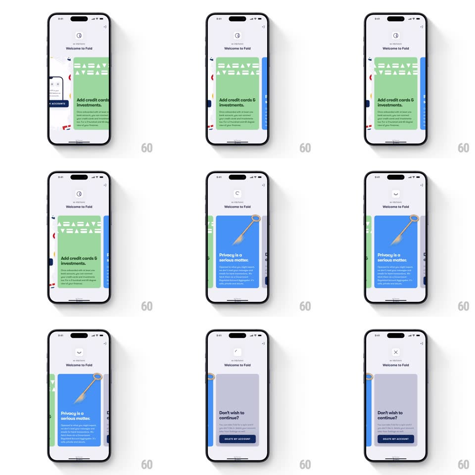

Media
Frame-by-frame

Rebuild this interaction 1:1: Fold's onboarding carousel - a springy horizontal card stack ("Add credit cards & investments", "Privacy is a serious matter", "Don't wish to continue?") with peeking neighbors, a morphing header icon, and a DELETE MY ACCOUNT end card.

Rebuild this interaction 1:1: Fold's onboarding carousel - a springy horizontal card stack ("Add credit cards & investments", "Privacy is a serious matter", "Don't wish to continue?") with peeking neighbors, a morphing header icon, and a DELETE MY ACCOUNT end card.
## Integration
Integration: stack-agnostic spec - springs given as stiffness/damping, timed motions as duration + curve; map every value to your framework and animation library of choice.
## Scene
"Welcome to Fold" header with a small circular step icon. Below: a wide rounded card (green "Add credit cards & investments" with pattern art; blue "Privacy is a serious matter" with a golden key; gray "Don't wish to continue?" with a dark DELETE MY ACCOUNT button). Adjacent cards peek at both edges.
## Motion spec
Pattern: springy card carousel with header-icon morph.
- Swipe: the card tracks 1:1, neighbors growing from 0.92 scale as the current shrinks; release snaps to the nearest card (spring ~320/20, one soft overshoot).
- The header's circular icon morphs per step - arrows rotating into a check, then into an X (icon paths crossfade + rotate 90deg, 300ms) - the chrome tracks the story.
- Card content staggers in on arrival: art first (scale 0.94 -> 1, spring ~360/18), headline next (fade + 10px), body last - 60ms apart.
- The privacy card's key glints once on arrival (light sweep across the key, 400ms).
- Final card: the DELETE button is dark and still - motion stops entirely here; the gravity is the point.
## Calibration
- Neighbor peek (~24px) is constant - the carousel always advertises more.
- Header icon morphs on settle, not mid-swipe - it confirms the step after it lands.
## Reduced motion
Cards crossfade; icon swaps without rotation.
## Don't miss
- The last card breaks the pattern deliberately - no art, no motion, just the question and the button.
- Card colors are content-coded (green = money, blue = trust, gray = exit).